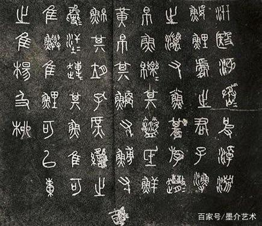
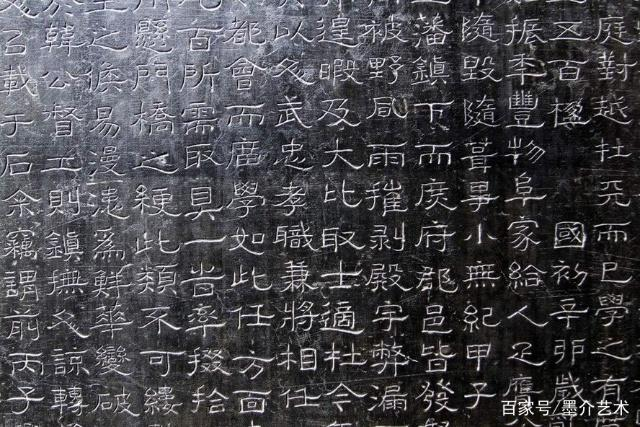
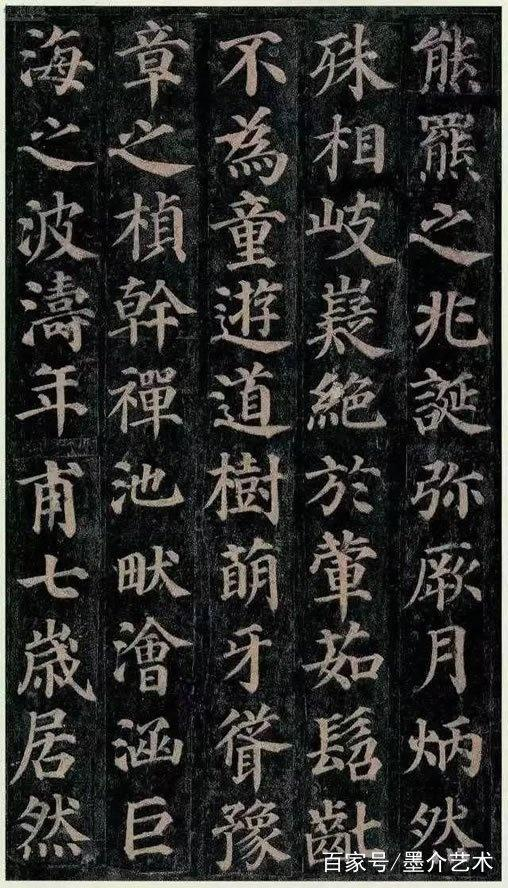
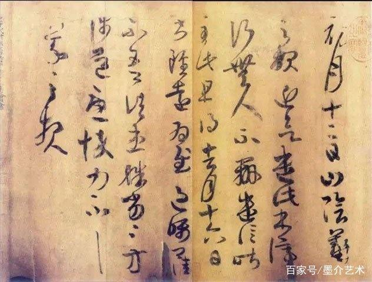
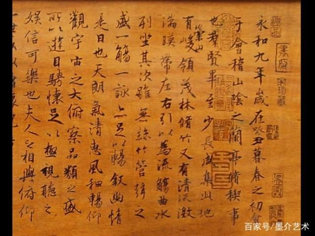

-----书法艺术----
中国的书法艺术兴始于汉字的产生阶段，“声不能传于异地，留于异时，于是乎文字生。文字者，所以为意与声之迹。”因此，产生了文字。 书法艺术的第一批作品不是文字，而是一些刻画符号——象形文字或图画文字。汉字的刻画符号，首先出现在陶器上。最初的刻画符号只表示一个大概的混沌的概念，没有确切的含义
书法形式的分类：
第一、篆书是传世最早的书法表现方式。一般来说，篆书可以分为大篆和小篆两种。大篆指的是甲骨文、金文、籀文以及六国文字，这种书法的表现形式还是以象形文字为主，识别与书写起来会比较难。后来秦国统一六国以后，开始对文字进行统一的规定，所以就在大篆的形式上进行了简化，让书写上更加贴近现实生活。虽然现在很多人都对篆书并不是很熟悉，但是它却是这么多书法种类中最有内涵的一种。

第二、隶书，在篆书之后开始被大众接受的字体。不过它相比于篆书来说在美观上有了很大的提高。而且书写出来的效果就是有点略微宽扁，而且横画长、直画短，这些都是它鲜明的特点。当然隶书的最大特点还是它有自己独有的思想性，通过柔美的笔画与严谨的章法下，体现出来的是有思想与内涵的文字。

第三、后来隶书经过慢慢的演变就开始形成楷书，而楷书也分为正楷、真书、正书。楷书是我国发展时间最悠久的书体，而且在历史上也有很多楷书大家。比如:唐朝欧阳询、颜真卿、柳公权以及元朝赵孟，他们在楷书上的造诣都是非常深，后来也是自成一派。如今这种形体方正、笔画平直的书法被人们成为书写的入门书体。因为人们需要钻研一笔一划的力度与美感，所以这对书法的基本功也有非常高的要求。

第四、草书的出现也意味着文字不仅仅再停留在内涵层面，而是更在乎它的美观，是五种书法中艺术价值最高的一种。草书的结构极度的精简，且整体上看它的笔画连绵不绝，文字看似杂乱无章，实则浑然天成。自古以来，草书大家也不乏少数。比如三国吴皇象的《急就章》，晋代王羲之的《初月》等。这些都是历史上赫赫有名的草书作品，它也一直被后人临摹与学习。

第五、行书是介于楷书与草书之间的书法。它既不像楷书那样条理清晰，正正方方，也不想草书那样过于追求形式。但是却集合了两种书法的优点，从而形成独树一帜的一派。这种书法形式萌芽于东晋时期，其中王羲之的《兰亭集序》被誉为“天下第一行书”。后来到了宋朝的时候行书发展到了最巅峰时期，米芾、苏轼、蔡襄、黄庭坚等人都非常擅长行书，也给后世留下了不少的传世佳作。
